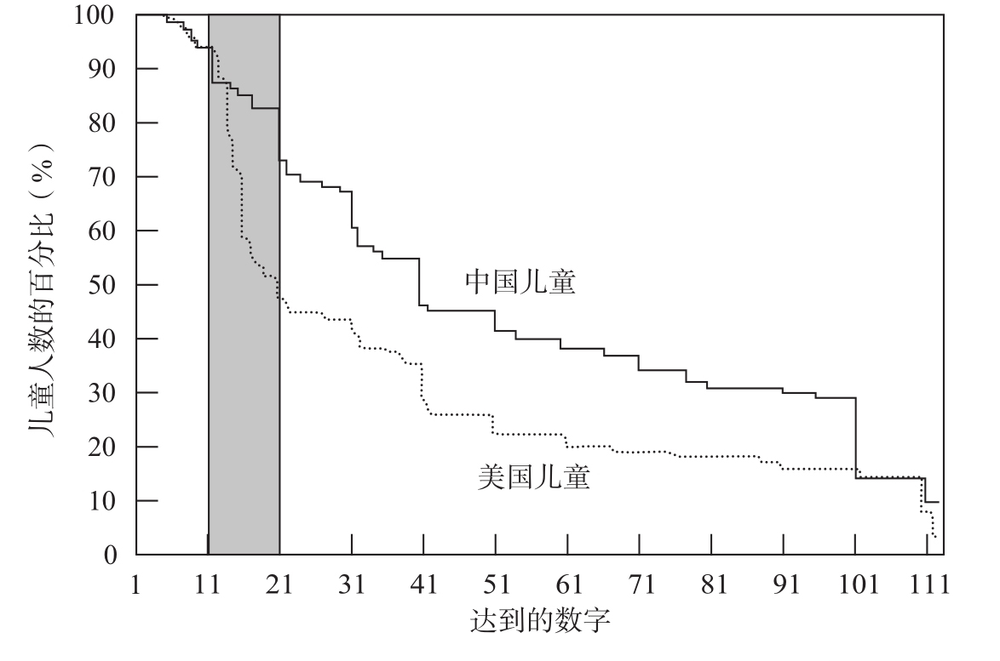

大声读出下面这串数字：4、8、5、3、9、7、6。现在，闭上眼睛，花20秒的时间尽量记住这些数字，然后再把它们背出来。如果你的母语是英语，你有50%的概率会失败。如果你是中国人，几乎可以保证成功。事实上，中国人的数字记忆广度可以扩展到9个，而英国人平均只有7个5。为什么会有这种差异？大概是因为中文中的数词更短一些。当我们试图记忆一列数字时，我们一般会使用非文字记忆循环将其存储（这就是为什么我们很难记住发音相近的数字，如“five”和“nine”或者“seven”和“eleven”）。这种记忆只能保持大约2秒，我们必须重复这些词以保持记忆。因此，我们的记忆容量取决于在不到2秒的时间内可以重复多少个数词。背得快的人记得更好。
中文的数词简洁明了，大多数可以在不到1/4秒的时间内读出来。例如，4是“sì”（四）、7是“qī”（七）。而对应的英语单词“four”“seven”读起来更耗时，大约需要2/3秒。显然，英国人和中国人之间的记忆差距是由这两种语言的长度不同造成的。在诸如威尔士语、阿拉伯语、汉语、英语和希伯来语这些差异很大的语言中，读出数字所需要的时间，与使用这种语言的人的数字广度之间存在着稳定的相关性。在记忆数字这件事上，最高效率奖应该颁给讲粤语的中国人，粤语的简洁性赋予香港居民有高达10位左右的数字记忆广度。
尽管“神奇的数字7”通常被认为是人类记忆容量的一个固定参数，其实它并不是一个普适常数。它仅仅代表了智人中一个特殊群体的数字广度的标准值，这个群体就是美国大学生，90%以上的心理学研究都是围绕他们展开的！数字广度是一个与文化和训练相关的量，并不能作为衡量记忆大小的一个固定指标。它在不同文化间的差异表明，亚洲的数字符号更紧凑，因而比西方的数字符号更容易记忆。
如果你不会说中文，还有其他办法。几个小窍门可以提升你的数字记忆能力。首先，永远用最短的句子记忆数字。对于一个长数字，如83 412，逐个记忆每个阿拉伯数字往往效果最好，就像背诵电话号码一样。其次，尝试将数字划分成以2个或3个为一组的单元。如果将它们分成4组，每组3个，你的工作记忆容量会上升到约12个数字。美国电话号码采用了这种策略，它由3位数的区号，以及3个一组、2个一组和2个一组的数字组成，如“503 485 98 31”。相比之下，在法国，人们用双位数表示电话号码就不太明智。例如，人们将85 98 31读作“八十五 九十八 三十一”，这可能是我们所能想到的最低效的记忆方法！
最后，请把数字带回熟悉的环境中，寻找递增或递减的数字序列、熟悉的日期、邮政编码或其他任何已知的信息。如果能用熟悉的东西对数字重新编码，你就能很容易地记住它们。在经过心理学家威廉·蔡斯（William Chase）和安德斯·埃里克森（Anders Ericsson）约250小时的指导训练之后，一名美国学生使用这种重新编码法将自己的记忆广度扩展到了80位数字6。这名学生是优秀的长跑运动员，拥有一个庞大的有关长跑纪录的心理数据库。他把要记住的80位数字分解成每3个或4个为一组，对应于永久记忆中的一系列长跑纪录进行记忆。
通过这样的指导，在记忆电话号码方面你应该不会有什么困难。但是，除非你是中国人，否则你还是免不了会遇到其他困难。数字名在计数和计算中也发挥了关键作用，这一次表现不佳的仍是数字名太长的语言。比如，计算“134+88”，威尔士小学生比英国小学生平均要多花1.5秒。鉴于年龄和教育程度相当，这种差异完全可以归因于读出题目及结果所耗费的时间不同。威尔士语中的数字名明显长于英语数字名。然而，英语也不是最佳语言。一些实验表明，日本儿童和中国儿童的计算速度远远超过同龄的美国儿童。
当然，在这类研究中，我们很难把语言和其他因素区分开，比如教育因素、在校时间、家长压力等。事实上，大量证据表明，在数学课的组织方面，日本学校在许多方面优于标准的美国学校。然而，我们可以通过研究学前儿童的语言习得过程来排除诸如此类的因素。所有儿童都面临着同样的挑战，即他们需要自己探索母语中的词汇和语法规律。仅仅通过接触“soixante-quinze”或“fünf und sießig”之类的短语，他们如何学会法语或德语的规则呢？一个法国儿童如何才能发现“cent deux”和“deux cent”的含义？即使儿童是天生的语言学家，就像诺姆·乔姆斯基和史蒂芬·平克（Steven Pinker）(13)的假设：大脑装备有一个语言器官，使学习最深奥的语言规则也成为一种本能，对数字组成规则的归纳不可能瞬时完成，而且会因语言的不同表现出差别。
在中国，一旦你学会了1到10的数字，通过一个简单的规则，你就很容易掌握其他数字（11等于十一，12等于十二……20等于二十，21等于二十一，等等）。相反，美国儿童不仅需要死记硬背1到10和11到19的所有数字，以及20到90之间所有的整十数，他们还必须自己去发现数字语法的各种规则，例如，“twenty forty”或“thirty eleven”是数词的无效组合。
凯文·米勒（Kevin Miller）和他的同事们进行过一项引人注目的实验，他们要求经过匹配的美国组和中国组儿童背数7。令人吃惊的是，语言差异导致美国儿童比同龄的中国儿童落后长达1年。4岁时，中国儿童平均能数到40。而在同样的年龄，美国儿童只能艰难地数到15。他们需要花1年的时间才能赶上来并数到40或50。美国儿童并不是始终落后于中国儿童，在数到12之前，这两组儿童水平相当。但是，当开始学习“13”和“14”这样的特殊数字时，美国儿童遇到了麻烦，而中国儿童受益于语言可靠的规律性，能够很容易地继续进步（见图4-3）。

凯文·米勒和同事们要求美国和中国的儿童尽可能多地背诵数字。同样年龄的中国儿童比美国儿童背得更多。
图4-3 中美两国儿童数字记忆广度的比较
资料来源：改编自Miller et al., 1995，版权所有©1995 by Cambridge University Press，得到出版商的授权。
毫无疑问，米勒的实验表明：记数系统的费解难懂，对语言习得过程产生了重要的负面影响。另一个证据来自对数数错误的分析。大家都听到过美国儿童背诵“twenty-eight，twenty-nine，twenty-ten，twenty-eleven”吧？这当中的语法错误显露出对数字语法规则的错误归纳，而这类错误在亚洲地区的国家中十分罕见8。
数字系统的影响一直延续到接下来的学生时代。中文口语中，数字的组织方式与书面阿拉伯数字的结构完全一致。因此，在学习以10为基数的位值符号原则时，中国儿童遇到的困难远小于美国同龄人9。在被要求用一些代表单位1的立方块和代表10的条形块组成数字25时，中国儿童轻而易举就选择了2个条形块和5个立方块，这表明他们理解基数10。同样年龄的美国儿童则表现不同，他们中的大多数不能利用条形块所提供的捷径，而是费劲地数出25个立方块。更糟糕的是，如果还有一个代表20的条形块，比起两个代表10的条形块，他们通常会选择前一个。他们似乎仅注意到了“twenty-five”（25）的表面信息，而中国儿童已经掌握了更深层次的以10为基数的结构。基数10是亚洲地区的语言中一个非常明显的概念，却令西方儿童相当头痛。
这些实验结果给出一个强有力的结论：西方的数字系统在许多方面不如亚洲的。前者很难在短期记忆中留存，它们会延长计算用时，并使学习数数和掌握基数10变得更加困难。文化选择早就应该淘汰像法语“quatre-vingt-dix-sept”这样荒谬的结构了。然而，法国的学校和学院所进行的标准化工作为语言的自然进化画上了句号。如果儿童可以投票，他们很可能会支持数字符号的全面改革，支持采用中文的模式。历史上至少有一次成功的语言改革。20世纪初，威尔士人心甘情愿地放弃了他们的旧记数系统，其复杂性超过了当今法语，他们选择了一个类似于中文的简单符号系统。但是，威尔士记数系统的改变又陷入另一个错误：新的威尔士数字单词，尽管其语法规律易于学习，但是记忆起来太长了！